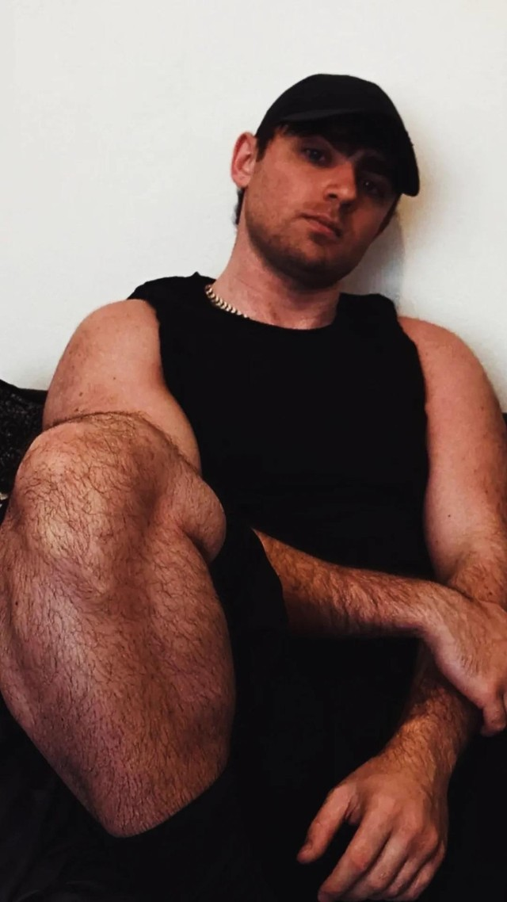
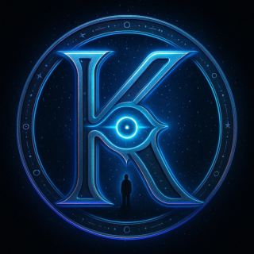

ACCESSIBILITY CONCEPT
GLOVE
A tactile communication ecosystem designed for people who are deafblind.
View concept ↗CORNELIUS AURELIUS / THE PURSUIT OF HUMAN POTENTIAL
I’m Cornelius Aurelius. I explore the intersection of art, music, invention, technology, literature and sport — learning, creating and turning ideas into something tangible.
Never stop becoming.

THE PERSON BEHIND THE WORK
See real moments of painting, music and sport. Explore the work beyond the screen.
DESIGN & INVENTION / SELECTED CONCEPTS
Explore individual concepts directly. These are proposed designs, not verified or commercially available products.
ACCESSIBILITY CONCEPT
A tactile communication ecosystem designed for people who are deafblind.
View concept ↗ORAL CARE CONCEPT
A proposed hands-free, two-piece sonic tooth-cleaning system.
View concept ↗CURIOUS BY NATURE
From early concepts and exploratory research to interactive creations.

Product concepts and possible solutions.
Explore inventions ↗Concept status & background ↗

Play seasonal games or browse the wider collection.
Explore games ↓All games & experiments ↗SELECTED WORK
Here are a few places to start, with a clear explanation of what you can do next.
 LEARNING / TRANSFERABLE SKILLSJust Get Skills
LEARNING / TRANSFERABLE SKILLSJust Get SkillsLEARNING TECHNOLOGY
Discover reusable skills, processes and abilities connecting what you already know with what you want to learn. Explore the Polymath Skill-Link Engine.
Find my Skill-Link → HUMAN IMPACTFootball for everyone
HUMAN IMPACTFootball for everyone
02 / HUMAN IMPACT
Awareness and educational resources exploring how colour vision differences can affect players, coaches and families.
Discover the project →
BUSINESS & TECHNOLOGYKRONATRIX03 / BUSINESS
Website creation and experiments in search visibility, digital marketing and practical AI tools.
Explore KRONATRIX → ORIGINAL SONGSAI Music
ORIGINAL SONGSAI Music
04 / MUSIC
Original song concepts and AI-assisted music, openly labelled so listeners know how it was made.
Explore the music → READ & DISCOVEREbook Library
READ & DISCOVEREbook Library
05 / BOOKS
Explore ideas in psychology, personal growth, business and life through ebooks developed with AI writing assistance.
Browse the collection → DIGITAL INTELLIGENCEAI.IQ
DIGITAL INTELLIGENCEAI.IQ
06 / APPS
A digital workspace exploring content strategy, performance insights and social-media growth.
Explore the app →SOFTWARE / PERSONAL PROJECTS
Android application development, focused on practical tools. These projects are not presented as publicly released apps.
CAMERA / ANDROID
A personal camera development project focused on one-handed recording, low-light video and framing tools.
PrototypeAUDIO / ANDROID
An experimental audio enhancement application, designed around a simple volume control.
In developmentMUSIC / ANDROID
A guitar tuning interface designed to identify strings and make tuning guidance easier to follow.
In developmentSEASONAL CREATIVE PROJECTS
Music, storytelling and interactive entertainment by Cornelius Aurelius.

MUSIC & FILM
Original AI-assisted country Christmas songs, albums and visual storytelling.
Watch on YouTube ↗
GAME DEVELOPMENT
A Christmas survival adventure with snowy worlds and giant bosses.
Play Santa ↗GAME DEVELOPMENT
Slide across the snow, fire chocolate buttons and stop the toy army.
Play Snowfight ↗EXPLORE BY DISCIPLINE
Go directly to the work that interests you.
Creative portfolio overview · About the books · All learning & games · Full archive
SPOTLIGHT / LEARN SPANISH
Learn Spanish by starting with the English you already know.
An interactive learning experience built around familiar word patterns, simple lessons, practice and play. See a connection, understand it, then use it.
Learning · Language · Interactive design

Start with what
you already know.
A WORK IN PROGRESS
Selected milestones in a continuing exploration of human potential. Dates indicate the period of activity, not necessarily first creation.
A growing collection of paintings, music, books, digital tools and concept explorations.
Explore the archive ↗A seasonal collection combining original AI-assisted songs, storytelling and interactive game projects.
Explore Christmas projects ↗Camera, audio and guitar-tuning development projects.
Explore app concepts ↗A redesigned portfolio bringing creative, technical and exploratory work together.
About the creator ↗THE PERSON BEHIND IT ALL
I'm Cornelius Aurelius. I'm interested in ideas worth exploring, whether that's a learning tool, an awareness project, a piece of music, a painting, a business experiment or a new way of looking at something.
This site is a home for what I've made, what I'm learning and what I'm still figuring out. Some projects are finished; others are evolving.
More about meTHE COMPLETE ARCHIVE
Search all 311 catalogue records, including websites, AI assistants, books, games, research and early concepts. Linked entries and unavailable records are clearly distinguished.